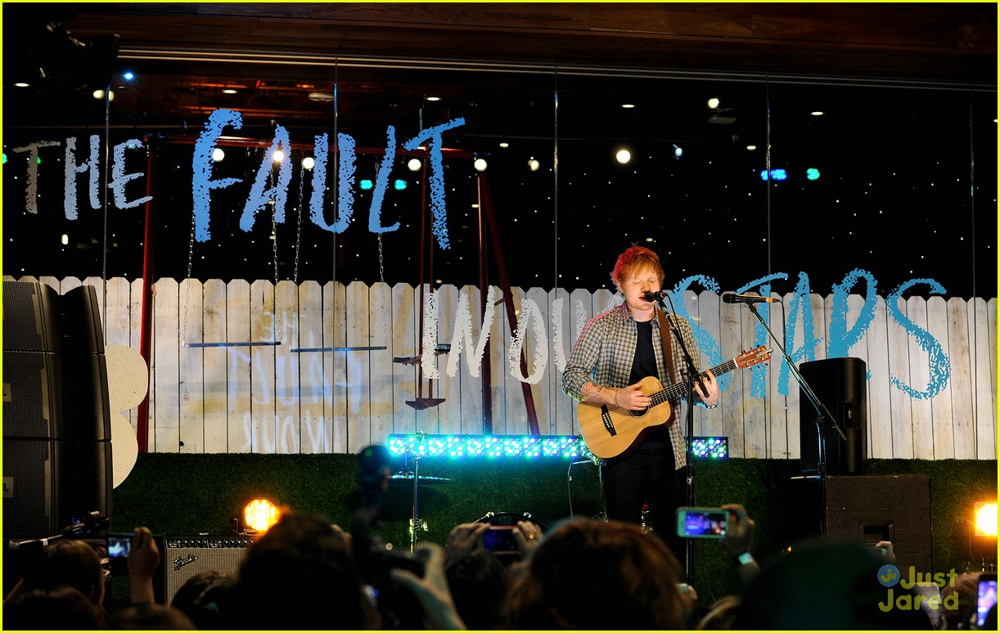

The Fault In Our Stars is a fabulous book about a young teenage girl who has been diagnosed with lung cancer and attends a cancer support group.

INTRODUCTION
Hazel is 16 and is reluctant to go to the support group, but she soon realises that it was a good idea. Hazel meets a young boy named Augustus Waters. He is charming and witty. Augustus has had osteosarcoma, a rare form of bone cancer, but has recently had the all clear
Hazel and Augustus embark on a roller coaster ride of emotions, including love, sadness and romance, while searching for the author of their favourite book. They travel to Amsterdam in search of Peter Van Houten the author of An Imperial Affliction. While on their trip Augustus breaks some heartbreaking news to Hazel and both of their worlds fall apart around them.
CAST
* Shailene Woodley as Hazel Grace Lancaster * Lily Kenna as young Hazel[8] * Ansel Elgort as Augustus "Gus" Waters[9] * Nat Wolff as Isaac, Augustus' best friend[10] * Laura Dern as Frannie Lancaster, Hazel's mother[10] * Sam Trammell as Michael Lancaster, Hazel's father[11] * Willem Dafoe as Peter Van Houten[12] * Lotte Verbeek as Lidewij Vliegenthart, Van Houten's assistant * Mike Birbiglia as Patrick, the support group leader[13] * Ana Dela Cruz as Dr. Maria * Milica Govich as Mrs. Waters, Augustus's mother * David Whalen as Mr. Waters, Augustus's father * Emily Peachey as Monica * Emily Bach as Monica's Mom * Carole Weyers as the voice of Anne Frank
MUSIC
Mike Mogis and Nathaniel Walcott of Bright Eyes scored the film.[38] The full album track list was released on April 13, 2014, featuring songs from artists including: M83, Grouplove, Kodaline, Jake Bugg, Tom Odell, Birdy, Ed Sheeran and Charli XCX, who performed "Boom Clap", one of the main songs from the movie, which became an international success, due in part to its exposure in the film.[39] The soundtrack was released by Atlantic Records on May 19 in the U.S., and on June 23 in the UK.[40]